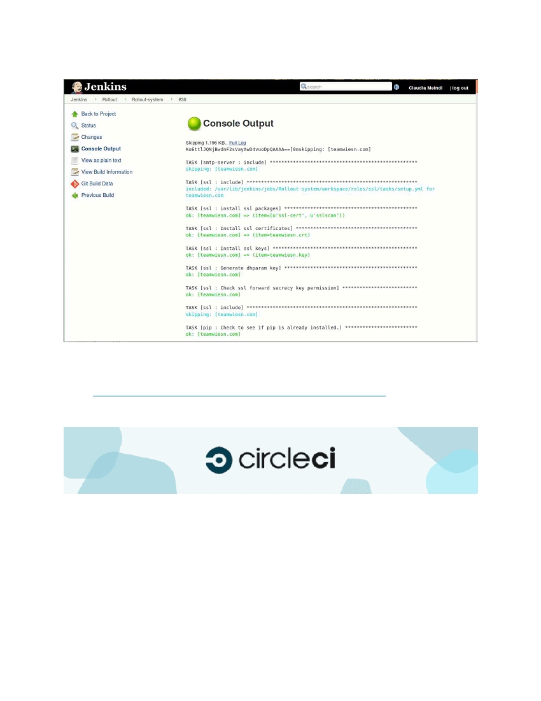
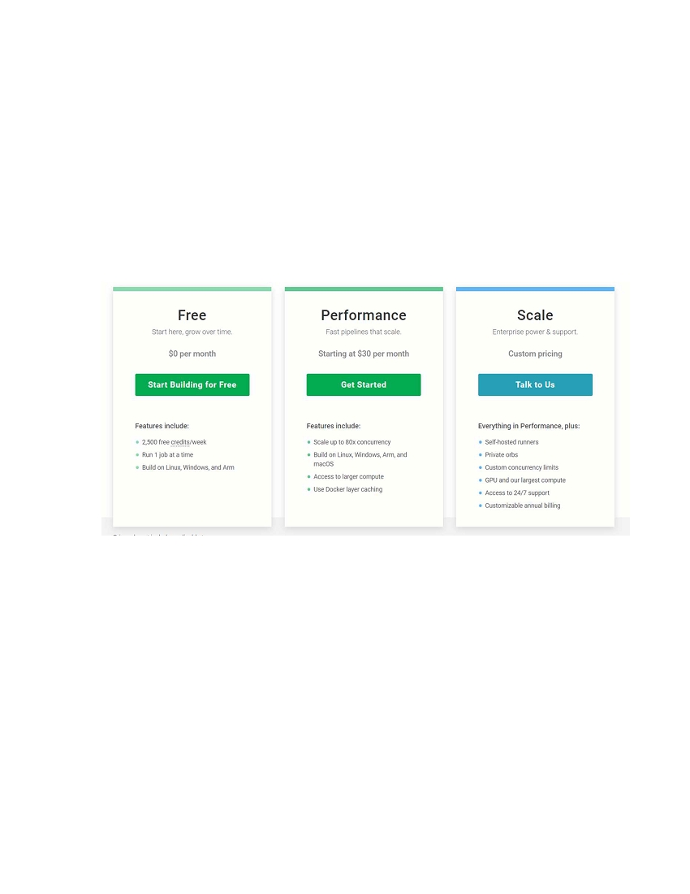
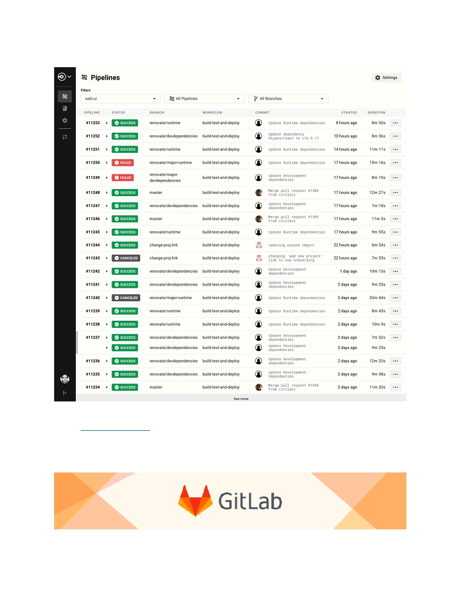
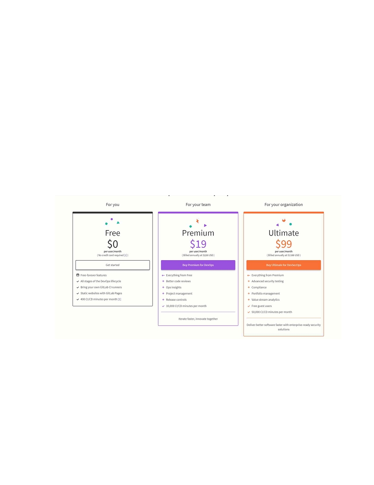
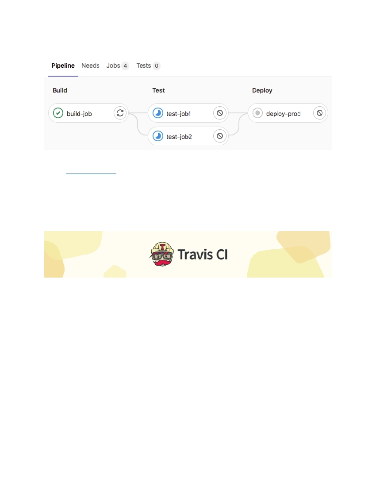
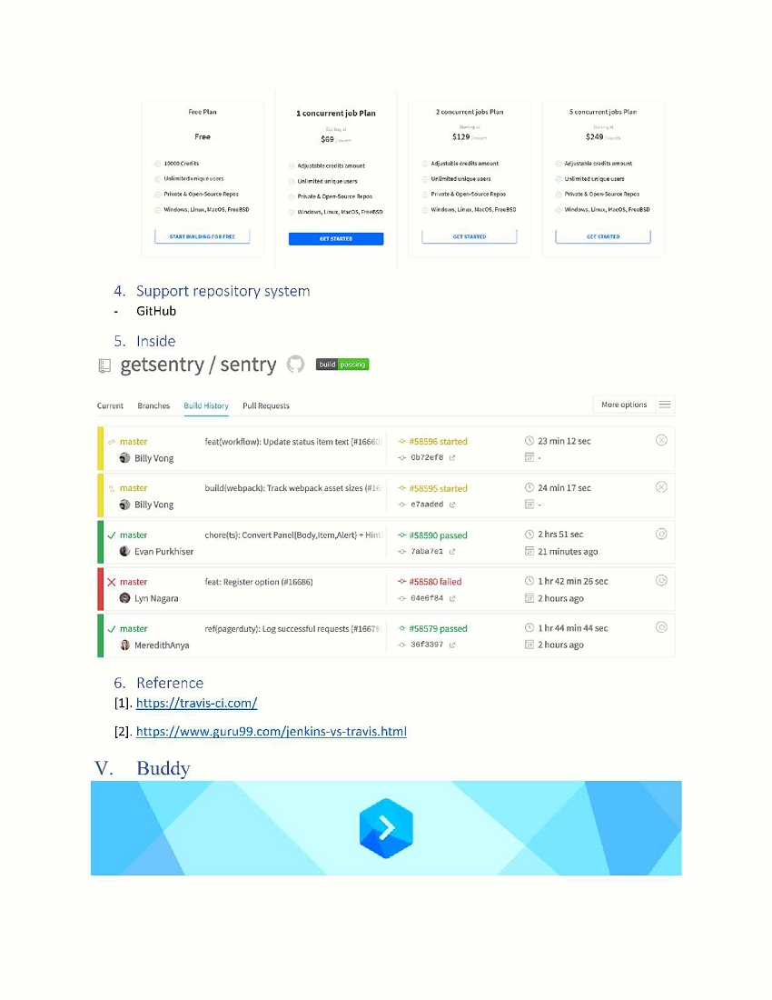
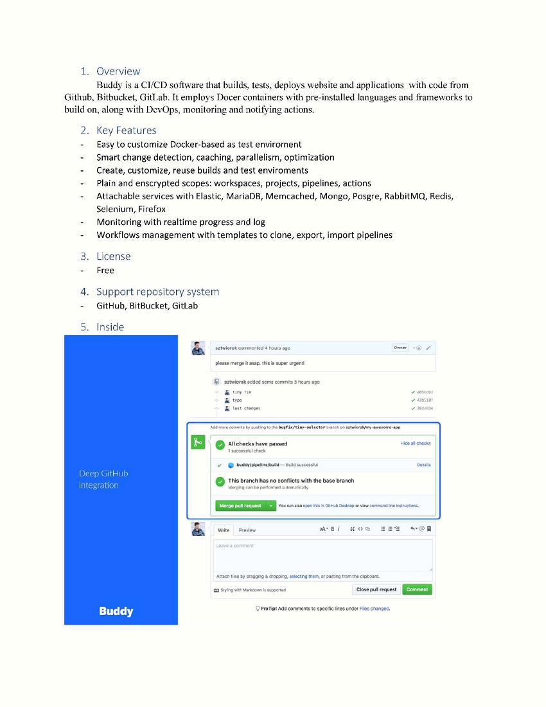

I. Jenkin
1. Overview
Jenkins is an open-source automation server that centerizes the build and continous intergration
process in the same place. It ‘s developed base on Java with pages for multiples platforms: Windows,
macOS, other Unix-like operating systems. Jekins also support hundreds of plugins available for building,
deploying and automating for software development projects
2. Key Features
-
Muliple platforms: Windows, macOS, Unix
-
Simple and friendly UI
-
Have huge community-contributed plugin
-
Easy to configuration with Web UI
-
Support shells and Window command in pre-build steps
-
Support notification on build status (Email, trigger hook,…)
3. License
-
Open source
-
Free with an activy community
4. Support repository system
-
Github, Gitlab, Bitbucket,…

5. Inside
6. Reference
[1] https://www.jenkins.io/
[2] https://opensource.com/article/19/9/intro-building-cicd-pipelines-jenkins
II.
Circle CI
1. Overview
CircleCI is a CI/CD tool supports development and deloyment. CircleCI allow automations
across the user’s pipeline from building, testing, publishing to the server.
Circle can intergrate with Github, Bitbucket to create build when commits. CircleCI hosts CI
under cloud-managed option or behind the firewall on private cloud.
2. Key Features
-
Build using container or virtual machine
-
Easy to debug
-
Webbase report

-
Automated parallelization
-
Quick tests
-
Notification via Email
-
Continous and branch deployment
-
Highly customizable by script
-
Automated merging and custom commands for package uploading
-
Fast setup
3. License
-
Linux plans start with 1 job without parallelism free
-
Open-source project get 3 free containers
-
More package, Price base subscription
4. Support repository system
-
Github, Github Enterprise Bitbucket,…

5. Inside
6. Reference
[1]. https://circleci.com/
[2]. https://www.browserstack.com/guide/circleci-vs-jenkins
III. GitLab

1. Overview
GitLab is a wonderful tools for managing different aspects of software development licecycle.
GitLab also provide you to trigger builds, run tests, deploy code with each commit beside source control.
You can build jobs in a virtual machine, Docker container or other servers with GitLab.
2. Key Features
-
View, create, manage codes and project through branching
-
Provide single source of truth, scalability for collaborating on projects and code
-
Self-host on private server
-
Design, develop and manage codes, CI/CD from a single distributed version control system
-
Helps devlivery fully embrace CI by automated builds, integration, verfication of source code
-
Reduce the delivery of applications
3. License
-
Commercial tools
-
Have limited free pacakage
-
Support SaaS on GitLab or your instance on-premises or on public cloud
4. Support repository system
-
Gitlab, Gitlab on-premise, self-host

5. Inside
6. Reference
[1]. https://gitlab.com
[2]. https://www.digitalocean.com/community/tutorials/how-to-set-up-a-continuous-deployment-
[3]. https://www.tutorialspoint.com/gitlab/gitlab_ci_cd.htm
IV. Travis CI
1. Overview
Travis CI is a service used to buld and test project (CI). Tracvis CI automatically detects new
commits from Github and after every commit, Travis CI will build the project and run test.
2. Key Features
-
Quick Setup
-
Live build view monitoring
-
Pull request support
-
Deployment to multiple cloud services
-
Pre-installed database services
-
Auto deployments on passing builds
-
Clean virtual machines for every build
-
Support macOS, linux, iOS
3. License
-
Hosted CI/CD service
-
Open-source projects use free
-
Private project can be tested with basis fee


6. Reference
[1]. https://buddy.works/
[2]. Grocker, 2020, https://dev.to/grocker42/why-you-should-use-buddy-works-if-you-want-to-